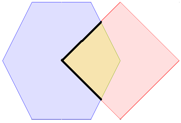
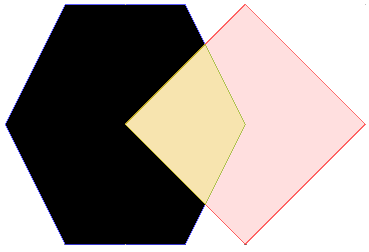
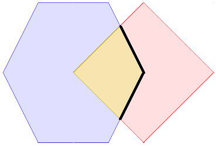
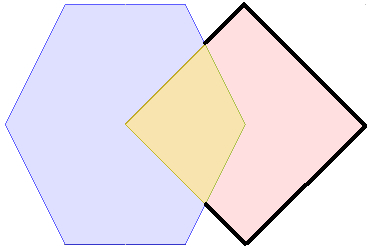

Point Set Theory and the DE-9IM Matrix¶
This page covers some of what the JTS Topology is made up of, and how you can use this information to increase the performance of your queries. optimise a bit.
This page has as little math as possible, quickly moving on to a normal String which we can do regular expression on. This page gives you enough information to optimise your own spatial relationship tests.
Related:
- http://vwfs.refractions.net/docs/Spatial_Validation_Academic.pdf
- http://edndoc.esri.com/arcsde/9.1/general_topics/understand_spatial_relations.htm
Definition of a Geometry¶
Point Set Theory includes concepts of lines and points in addition to regions. These constructs are defined as the set of points contained in their Interior, Boundary and Exterior.
- a Region h is define as a set of interior points h0, boundary dh and exterior is everything not part of h.
- a Line l is defined by an set of interior points l0 along its length, a boundary of the two end points and an exterior of everything not part of l
- a Point p is defined by an interior point p0, there is no boundary and the exterior is everything except the point p.
As shown above they refer to region as h, line as l and point as p. In order to talk about the interior, boundary and exterior the following annotations are added.
| Geometry | Primitive | Interior | Boundary | Exterior |
|---|---|---|---|---|
| A Region | h | h0 | dh | -h |
| A Point | p | p0 | dp | -p |
| A Line | l | l0 | dl | -l |
We have an intuitive idea of what a dimension is, for point set theory it is going to act as a number summarising the shape of a geometry.
| Shape | Dimension | Non-empty |
|---|---|---|
| Region | dim( Region ) is 2 | “T”, 2 is a non empty value |
| Line | dim( Line ) is 1 | “T”, 1 is a non empty value |
| Point | dim( Point ) is 0 | “T”, 0 is a non empty value |
| empty set | dim( empty set ) is -1 | “F”, -1 is an empty value |
You can read dim( obj ) as “the dimension of obj”. Hopefully this line up with your idea of two dimensional flat shapes, and one dimensional lines.
We are going to leave 3D stuff out as we are focusing on JTS.
Intersection of Two Geometries
Relationships between Regions are described as a matrix produced by comparing the intersection of the Interior, Boundary and Exterior properties of both regions. This comparison referred to as the Dimensionally Extended 9-Intersection Matrix or DE-9IM.
The relationship between two geometries x and y (point line or region) as defined by their Interior, Boundary and Exterior results in a matrix based on: x INTERSECTION y.
Intersection of Two Geometries¶
Relationships between Regions are described as a matrix produced by comparing the intersection of the Interior, Boundary and Exterior properties of both regions. This comparison referred to as the Dimensionally Extended 9-Intersection Matrix or DE-9IM.
The relationship between two geometries x and y (point line or region) as defined by their Interior, Boundary and Exterior results in a matrix based on: x INTERSECTION y.
To start with here is what the intersection of two objects x and y looks like.
x y
And in code:
GeometryFactory geometryFactory = FactoryFinder.getGeometryFactory( null );
WKTReader reader = new WKTReader( geometryFactory );
Polygon x = (Polygon) reader.read("POLYGON ((10 10, 15 0, 25 0, 30 10, 25 20, 15 20, 10 10))");
Polygon x = (Polygon) reader.read("POLYGON ((20 10, 30 0, 40 10, 30 20, 20 10))");
The 9-Intersection Matrix is going to act as a record of what is going on between the two objects above. Use the above picture as reference point as we go through writing down what the intersection matrix looks like.
The 9-Intersection Matrix lists the intersection of the interior, boundary and exterior of each geometry with the other (for a total of nine combinations).
x INTERSECTION y =
| 9IM | Interior | Boundary | Exterior |
| Interior | x0 INTERSECTION y0 | x0 INTERSECTION dy | x0 INTERSECTION -y |
| Boundary | dx INTERSECTION y0 | dx INTERSECTION dy | dx INTERSECTION -y |
| Exterior | -x INTERSECTION y0 | -x INTERSECTION dy | -x INTERSECTION -y |
Since that just looks like a lot of math, try this handy visual representation:
| 9IM | Interior | Boundary | Exterior |
| Interior |  |
 |  |
| Boundary |  | ||
| Exterior |  |
{kind=link}
{kind=link}
{kind=link}
{kind=link}
{kind=link}
{kind=link}
{kind=link}
{kind=link}
The next step is to count the dimensions of the shapes in the above 9-Intersection matrix. This gives us the “Dimensionally Extended 9-Intersection Matrix”.
- DE-9IM = dimension( x INTERSECTION Y)
- DE-9IM =
| DE-9IM | Interior | Boundary | Exterior |
| Interior | 2 | 1 | 2 |
| Boundary | 1 | 0 | 1 |
| Exterior | 2 | 1 | 1 |
As you can see this matrix is a summary of the relationship between the two geometries. Depending on the geometry involves; and their arrangement you will get different numbers here. The above numbers are taken by looking at what kind of shapes are displayed in the above pictures and writing down their dimension.
And if you were writing this in code it would be:
String relationship = "212101212";
You can also generate this from two live geometry instances:
IntersectionMatrix matrix = geometry.relate( geometry2 );
String relationship = matrix.toString();
This is something so normal we can start to use regular expressions to perform pattern matching on the result! Indeed that is just how Geospatial Relationships are defined.
Geospatial Relationships¶
Now that we have boiled how two Geometry instances are interacting to a String we can define our Geospatial relationships can be described in terms of a wild card expression.
Consider the following definition of Area/Area overlap:
| OVERLAP | Interior | Boundary | Exterior |
| Interior | T | * | T |
| Boundary | * | * | * |
| Exterior | T | * | * |
Or in code:
String overlaps = "T*T***T**";
Where:
- T: value is “true” - non empty - any dimension >= 0
- F: value is “false” - empty - dimension < 0
- *: Don’t care what the value is
- 0: value is exactly zero
- 1: value is exactly one
- 2: value is exactly two
You can use these strings with the Geometry relate method:
boolean isRelated = geometry.relate( geometry2, "T*T***T**" );
You can now start to make sense of the JTS javadocs here they define what the operations mean in terms of the relate function.
- x.Disjoint(y)
- FF*FF**** All
- x.Touches(y)
- FT******* Area/Area, Line/Line, Line/Area, Point/Area
- F**T***** Not Point/Point
- F***T**** All
- x.Crosses(y)
- T*T****** Point/Line, Point/Area, Line/Area
- 0******** Line/Line
- x.Within(y)
- TF*F***** All
- x.Overlaps(y)
- T*T***T** Point/Point, Area/Area
- 1*T***T** Line/Line
To complete our example lets see what relationships our “212101212” string represents.
{kind=link}
| Relationship | Area/Area Pattern | “212101212” | Description |
|---|---|---|---|
| Disjoint | FF*FF**** | false | x is not disjoint from y |
| Touches | FT******* | false | x does not just touch y |
| Touches | F***T**** | false | x does not just touch y |
| Crosses | T*T***T** | true | x crosses y |
| Within | TF*F***** | false | x is not within y |
| Overlaps | T*T***T** | true | x overlaps y |
The only one that is not really intuitive here is “touches”, yes x and y touch in the english sense of the word; but since x and y overlap they are not considered to be only touching. The relationship touches only works when the contact between geometries is limited to the border.
Optimisation¶
Combining Relationship Tests¶
Since calculating this stuff is expensive you should take some care not to work too hard; don’t call multiple relationship test functions if you can get away with it.
Do not do this:
if( geometry.disjoint( geometry2 ) || geometry.touches( geometry2 ) ){
// these two geometries hardly know each other
}
The first alternative is to calculate the full matrix once and then test out what it can tell you:
IntersectionMatrix matrix = geometry.relate( geometry2 );
if( matrix.isDisjoint() || matrix.isTouches(2,2) ){
// these two geometries hardly know each other
}
Of course you can see that with the pattern matching often the full matrix is not needed (since a lot of interactions are marked as don’t care). If you think about what you are testing you can come up with your own string and do the test in one step.
| Relationship | Pattern |
|---|---|
| Disjoint | FF*FF**** |
| Touches | F***T**** |
| Touches | FT******* |
| RESULT | F******** |
We can set up the relate function to test against this pattern:
if( geometry.relate( geometry2, "F********" ) ){
// these two geometries hardly know each other
}
So it ends up the relationship we are testing is that the interiors do not overlap.
PreparedGeometry¶
Occasionally, when comparing two sets of geometry, you can get nested loops in order to compare each pair.:
for( Geometry geometry : firstCollection ){
for( Geometry geometry2 : secondCollection ){
if( geometry.disjoint( geometry2 ) ){
// process
}
}
}
Each time you do a geometry relationship test; JTS “explodes” the geometry into an internal data structure (called an edge graph).
In order to save this edge graph and reuse it for more than one test you can rewrite the above code to use a PreparedGeometry:
for( Geometry geometry : firstCollection ){
PreparedGeometry prep = PreparedGeometryFactory.prepare( geometry );
for( Geometry geometry2 : secondColection ){
if( prep.disjoint( geometry2 ) ){
// process
}
}
}
The PreparedGeometry method is method compatible; allowing you to easily try it out and benchmark for any performance gains.